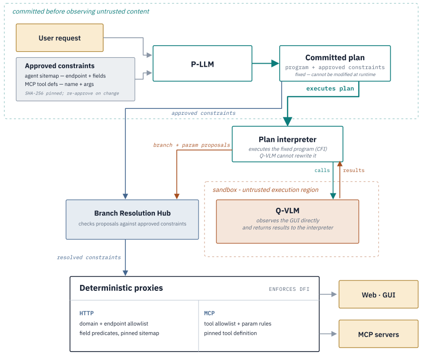

Securing Computer-Use Agents Against Branch Steering Attacks
Abstract summary
Computer-use agents can be redirected by untrusted page content and tool responses even when execution follows an approved plan. This work studies branch steering as a data-flow integrity problem, introduces STEER-Bench to measure it, and presents COBRA: an architecture that constrains what each trusted branch may do across graphical and MCP interactions. The evaluation examines security, benign-task utility and the practical costs of enforcing these constraints.